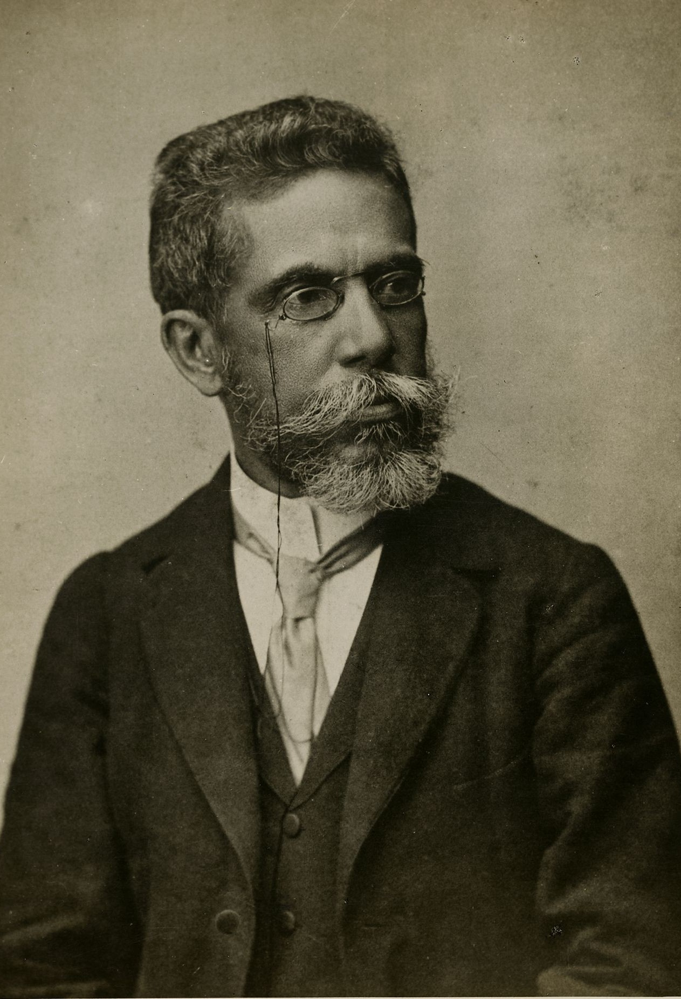

Lula.
diario de la mañana — el mundo, tu ciudad y lo que te asombra

Buen día, domingo. Día de sol, sin lluvia: mínima cerca de 19° y máxima entre 25 y 29 según la fuente que mires. Edición lenta, para leer cuando quieras: la semana en seis titulares, los cuatro papers que pasaron por acá de lunes a sábado puestos uno al lado del otro, un clásico brasileño que es la cosa más moderna escrita en el siglo XIX, y el repaso de francés e inglés.
- La semana en seis titulares3'
- Argentina, hoy2'
- Los cuatro papers de la semana4'
- Un clásico: Machado de Assis4'
- La palabra del día1'
- El asombro de la semana1'
- Pasatiempo: sudoku difícil20'
- Cuaderno: repaso de la semana4'
De lunes a sábado
- El Papa cerró su visita y se fue a Perú. Misa en Luján el miércoles, con feriado solo en la provincia, y despedida en Ezeiza. Esta semana recorrió Chiclayo —donde fue obispo— y celebró misa en el Cusco, a más de 3.400 metros.
- Empezó la COP31 en Antalya, con una presidencia repartida entre Turquía y Australia. El viernes la discusión fue, como siempre, el financiamiento: Guterres pidió acelerar los recortes de emisiones y la salida de los combustibles fósiles. Termina el 20.
- Se movió algo en Ucrania. Después de la ronda tripartita en Abu Dabi hubo un acuerdo de intercambio grande de prisioneros, y dos enviados estadounidenses viajaron a Moscú. La Unión Europea, reunida en Dublín, decidió mandar un equipo de diplomáticos a las negociaciones en vez de un enviado único.
- La inflación de octubre dio 2,2 %, por encima de lo que esperaba el mercado y el valor más alto desde abril. Pero el núcleo —la tendencia de fondo— dio 1,5 %, el más bajo en quince meses: lo que empujó el índice fueron tarifas y estacionales.
- Estados Unidos se quedó sin aviones por una falla del sistema de control de tránsito aéreo, el apagón aeronáutico más grande desde 2001.
- Y en el Pacífico: Filipinas y Australia firmaron un acuerdo de cooperación militar en Manila, en medio de la tensión con China en el Mar de China Meridional; Lula da Silva pasó por la cumbre de la ASEAN.
Tres cosas
La explosión de Lanús. La rotura de un caño de gas provocó una explosión con al menos un muerto, unos treinta heridos y una persona buscada entre los escombros. Más allá del hecho, lo que queda planteado es el estado de la red de distribución en el conurbano y quién la controla.
Los contratos de la visita papal. Según Perfil, ocho empresas recibieron más de 20.477 millones de pesos para organizar los eventos de la visita. Es el tipo de número que conviene mirar con la pregunta correcta: no «es mucho o poco», sino cómo se adjudicó, con qué competencia y con qué rendición.
Y el Presupuesto. Con dos semanas de sesiones por delante, el Gobierno acelera el Presupuesto 2027. Es la discusión económica más importante del mes: sin ley, el Ejecutivo prorroga el presupuesto anterior y maneja las partidas con enorme discrecionalidad.
Y en la cancha: la Selección perdió 2-1 con Uruguay en la Bombonera, en el primer partido después del retiro de Messi. Boca goleó 3-0 y es finalista de la Copa Argentina.
Qué tienen en común
Sin buscarlo, los cuatro trabajos de esta semana contestan la misma clase de pregunta: dónde está el control. No qué molécula hace qué, sino quién decide, y qué pasa cuando le sacás o le ponés el freno.
| Lunes · Nature Cell Biology | El corion humano reconstruido apagando Hippo. Resetean células madre al estado naive, inhiben las quinasas LATS y en tres semanas sale el linaje de la placenta, sin morfógenos. El control estaba en un freno, no en una orden. doi |
|---|---|
| Miércoles · Nature | La IgA frena la proliferación del epitelio del colon. Uniéndose a DMBT1, contiene la división celular disparada por bacterias; los ratones sin IgA hacen más del doble de tumores y la IgA oral los rescata. Un anticuerpo haciendo de ligando de señalización, no de neutralizante. doi |
| Viernes · NEJM | Un interruptor químico en el hipocampo. Tres pacientes con epilepsia refractaria, un AAV que instala un receptor diseñado y clozapina en dosis baja como llave: −92,6 % de crisis. Acá el control se fabrica y se deja afuera del cuerpo, en una pastilla. |
| Sábado · Science | Dos cornejas deciden en 235 ms, la mitad que humanos y monos, con un cerebro sin corteza en capas. El control de la decisión es un algoritmo —acumular evidencia hasta un umbral— que dos linajes separados hace 320 millones de años implementaron por su cuenta. |
La lectura que me llevo: en tres de los cuatro, el avance no vino de descubrir una pieza nueva sino de encontrar la palanca: LATS, DMBT1, un receptor que no existía en la naturaleza. La biología molecular de esta década se parece cada vez menos a un catálogo y cada vez más a un tablero de control, donde lo valioso es saber qué interruptor toca qué. Y el cuarto paper, el de los cuervos, es el recordatorio de lo contrario: a veces la respuesta no está en ninguna pieza, está en la forma del problema.
Machado de Assis, el muerto que escribe
En 1881, en Río de Janeiro, un funcionario público de cuarenta y dos años publicó una novela que empieza con el narrador ya muerto, contando su propia vida desde el otro lado, con un humor que todavía no tenía nombre. Se llamaba Joaquim Maria Machado de Assis, era hijo de un pintor de brocha mulato y de una lavandera portuguesa, nieto de esclavos libertos, epiléptico, tartamudo y casi autodidacta. Terminó siendo el primer presidente de la Academia Brasileña de Letras. La novela es Memorias póstumas de Blas Cubas.
Al gusano que primero royó las frías carnes de mi cadáver dedico, como recuerdo entrañable, estas Memorias póstumas.
Esa es la dedicatoria. Lo que sigue, el primer capítulo, se titula «Defunción del autor» y empieza así (la traducción es mía):
«Dudé un tiempo si debía abrir estas memorias por el principio o por el final, es decir, si ponía en primer lugar mi nacimiento o mi muerte. Dado que el uso común manda empezar por el nacimiento, dos consideraciones me llevaron a adoptar método diferente: la primera, que yo no soy propiamente un autor difunto, sino un difunto autor, para quien la tumba fue otra cuna; la segunda, que el escrito quedaría así más galante y más nuevo.»
Por qué importa
- Se adelantó cincuenta años. Capítulos de tres líneas, un capítulo hecho solo de puntos suspensivos, interrupciones al lector, digresiones que se burlan de la digresión. Todo eso se llamó «vanguardia» en Europa en los años veinte. Acá ya estaba, en portugués, en 1881.
- Y es lo contrario de solemne. Blas Cubas es un hombre ocioso, vanidoso y bastante inútil, que repasa su vida y descubre que no hizo nada. El último capítulo es una lista de lo que no tuvo, y termina con un saldo: no tuvo hijos, no transmitió a nadie «el legado de nuestra miseria». Es un chiste y es devastador.
- La traducción al castellano llegó tarde. Brasil siempre estuvo cerca y leído poco. Si leés portugués, el original es accesible y está entero en dominio público.
ocio sustantivo
latín otium (tiempo libre, estudio) → castellano ocio · francés oisiveté · inglés leisure (del francés leisir, «estar permitido»)
En Roma, otium no era vagancia: era el tiempo propio, el que se dedicaba a pensar, escribir o conversar. Lo opuesto tenía nombre y era una negación: neg-otium, la ausencia de ocio. De ahí sale «negocio», y también «negociar». Es decir, el latín no definía el ocio como la falta de trabajo, sino al revés: el trabajo era lo que pasaba cuando no se podía tener ocio.
La inversión moderna es completa. Hoy «ocioso» es un insulto suave y «ocio» suena a tiempo muerto, mientras que estar ocupado es una credencial. Blas Cubas, el de hoy, es exactamente un hombre de otium romano contado por alguien que ya no cree en eso. Y el domingo, si lo pensás, es el último resto institucional de la idea.
Que te quede alguien adentro
De todo lo de esta semana, lo que me quedó dando vueltas es el microquimerismo fetal: durante el embarazo pasan células del feto a la circulación de la madre, y algunas se quedan décadas. El trabajo clásico es de 1996, del grupo de Diana Bianchi: encontraron células progenitoras fetales masculinas en sangre materna hasta 27 años después del parto, y el truco metodológico fue elegante —un cromosoma Y en la sangre de una mujer no puede ser de ella—.
Comentarios posteriores llevaron la persistencia documentada a los 38 años, y se encontraron células quiméricas en riñón, hígado, bazo, pulmón, corazón y cerebro maternos. Qué hacen ahí sigue abierto: hay evidencia de que se acumulan en tejidos en reparación, y también de asociación con preeclampsia y con enfermedades autoinmunes. Bianchi lo resumió sin adornos: no hay evidencia suficiente para acusarlas ni para absolverlas.
Me gusta porque desarma una intuición muy básica, la de que el cuerpo es una cosa cerrada con un genoma adentro. No lo es. Es una colonia con huéspedes, y algunos entraron por la puerta grande.
El del domingo
Semana 10: la familia, y dieciséis expresiones
Le français · todo lo de esta semana
| le matin / l'après-midi / le soir | a la mañana / a la tarde / a la noche |
|---|---|
| je rentre à la maison | vuelvo a casa |
| je suis fatiguée | estoy cansada |
| j'ai beaucoup de travail | tengo mucho trabajo |
| on se voit ? / demain, alors | ¿nos vemos? / mañana, entonces |
| un frère, une sœur | un hermano, una hermana |
| mon père, ma mère | mi papá, mi mamá |
| c'est ta famille ? | ¿es tu familia? |
Las dos reglas de la semana: después de beaucoup va siempre de, sin artículo; y el posesivo concuerda con lo poseído, no con el dueño (mon père, ma mère).
English · las expresiones de la semana
Del martes: counterintuitive · a trade-off · to hold · framing. Del miércoles: to bill something as · a sticking point · to cut a ribbon · to fall between two stools. Del jueves: to vouch for · on the strength of · fussy · to erode. Del viernes: well rehearsed · to fall hardest on · to absorb a cost · to get around to.
Quiz de la semana
La inflación de octubre dio 2,2 %, pero el núcleo dio 1,5 %. Eso quiere decir que…
Inhibir las quinasas LATS en células madre naive sirve para…
La IgA del intestino, en este trabajo, actúa sobre el epitelio…
En la terapia quimiogenética, la clozapina funciona como…
El microquimerismo fetal se demostró encontrando…
«Negocio» viene de…
Escritura
- Quiz: tarifas y estacionales · soltar el freno de Hippo · ligando de DMBT1 · llave del receptor diseñado · cromosomas Y · nec-otium.
- Francés, por si quedó alguna: le soir = a la noche · je rentre = vuelvo · beaucoup de travail = mucho trabajo · ma mère = mi mamá.
Sudoku:
Fuentes de esta edición
- La semana y el país: agenda de agencias · la tapa de Perfil · UN News sobre la COP31
- Clima: Cadena 3, con datos del SMN
- Los papers: Nature Cell Biology · Nature · NEJM · la corneja de Tubinga · Bianchi y col., PNAS 1996
- Machado de Assis: el texto original de Memórias Póstumas de Brás Cubas (1881) está en dominio público; la traducción del fragmento es mía.
Mañana, lunes: arte y museos. — Lula.